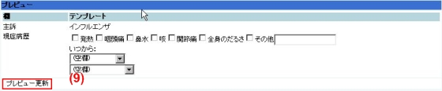

（２）テンプレート入力画面が展開します。
（３）既存のテンプレートを選択し、編集画面に進みます。
例として、インフルエンザを選択します。
（４）インフルエンザのテンプレートの編集を行なう場合、編集アイコンをクリックします。
（５）このテンプレートを参考に別のテンプレートを作成することもでき、その場合、コピーを選択します。
（６）テンプレート編集画面です。
画面上部から、分類、名前、使用（する／しない）を設定していきます。
ここまでは、テンプレート選択画面で使用するテンプレートを指定するためのもので、カルテ内容に記載されるのは、主訴（SO）以降の項目になります。
（７）主訴以降の項目に関して、記入に際しては、▲印をクリックすると入力フィールドが現れるようになっています。
（８）現れた入力フィールドに対して、入力項目を設定していきます。
（９）入力項目はタグ言語になっています。
<<<* >>>はチェックボックス。文字区切りは|||です。
<<< >>>はフリーワード入力ボックスです。
括弧なしの文が地の分になります。
<<< >>>の中に|||で区切った文字を入れると、項目選択ボックスになります。
プレビュー更新をクリックすると、画面最下段のプレビューが、実際にテンプレートを記入する形で表示されます。

（１０）編集を完了したら、編集完了ボタンを押すと、編集内容が確定します。